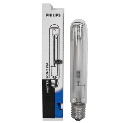
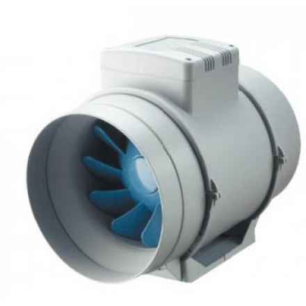
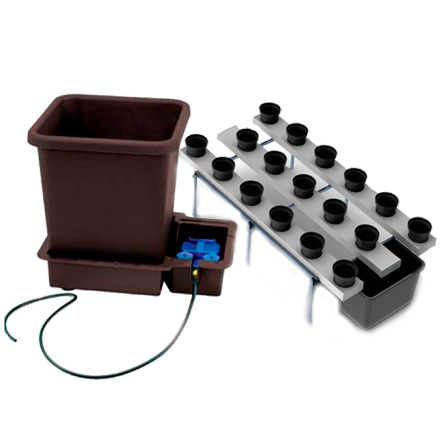
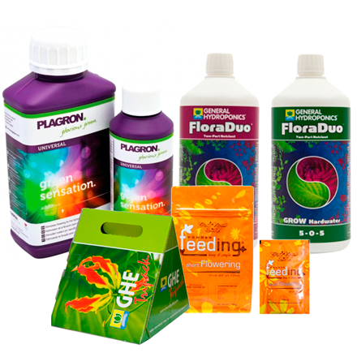
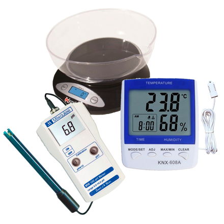
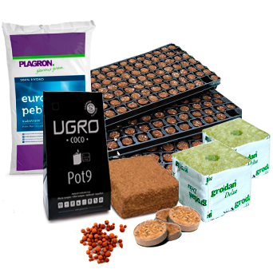
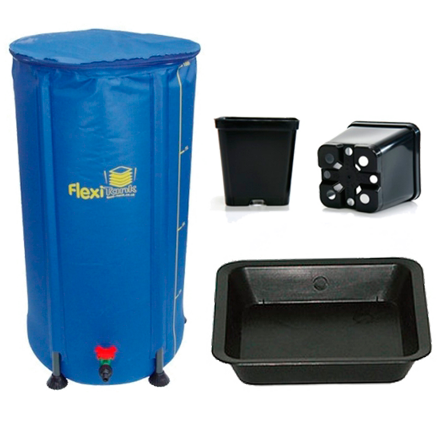
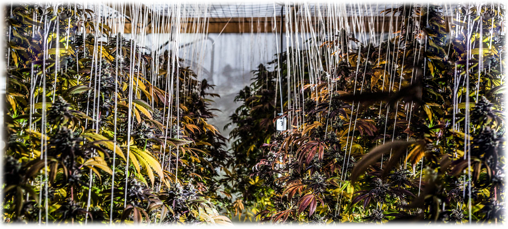
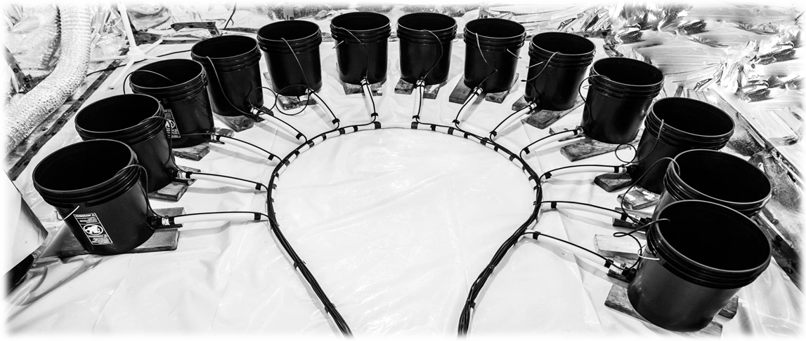

Успех в гровинге на 50% зависит от генетики семян и на 50% от того, какие условия вы сможете создать для растения. Профессиональное оборудование позволяет имитировать идеальное лето в любой точке мира, защищая растения от вредителей, перепадов температур и лишнего внимания соседей.
Основные категории оборудования
Освещение

Сердце любого гроубокса. Сравнение LED, ДНаТ и ЭЛС ламп, выбор отражателей и расчет мощности на квадратный метр.
Подробнее →Гроубоксы

От самодельных шкафов до профессиональных тентов. Как выбрать размер и материал, обеспечивающий лучшую светоотражающую способность.
Подробнее →Вентиляция и фильтры

Контроль температуры и влажности, а также полное удаление специфического запаха с помощью угольных фильтров.
Подробнее →Удобрения и питание

Разоблачение мифов о «чудо-стимуляторах». Подбор NPK-составов для вегетации и фазы цветения.
Подробнее →Субстраты и грунт

Сравнение торфа, кокоса, гидропоники и минеральной ваты. Какой субстрат выбрать для вашего стиля выращивания.
Подробнее →Емкости и горшки

Почему тканевые горшки лучше пластиковых? Обзор объемов и типов емкостей для разных стадий роста.
Подробнее →Системы полива

От ручного полива до автоматического капельного орошения. Как избежать перелива и обеспечить доступ кислорода к корням.
Подробнее →Контроль и pH-метры

Точное измерение кислотности воды и почвы. Почему pH-метр — самый важный прибор в арсенале гровера.
Подробнее →Золотые правила оснащения гроубокса

Если ваш бюджет ограничен, расставляйте приоритеты в таком порядке:
- Свет: На нем нельзя экономить. Плохой свет = слабые шишки.
- Вентиляция: Без свежего воздуха растение просто сгниет от плесени.
- Контроль pH: Даже лучшие удобрения не сработают, если pH воды будет неправильным.
- Автоматика: Таймеры и датчики — это комфорт, но не база.
🌿 Готовы собрать свой бокс?

Если вы не знаете, с чего начать, изучите наш гид по домашнему выращиванию.
Гид по индору